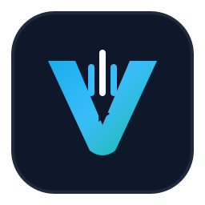
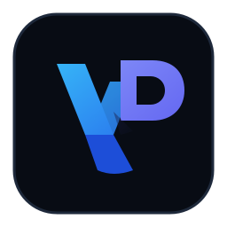

4 eksplorasi visual identitas geometris profesional bebas AI-slop untuk Vocaplay English Studio.
Kombinasi inisial huruf V (Vocabulary) dengan segitiga Play forward. Sayap kanan membentuk panah game maju, dilengkapi node akustik di kanan atas yang melambangkan suara/pelafalan.

Menghubungkan ekualiser frekuensi suara (Speech Recognition / Listening) langsung di dalam rongga huruf V, dengan aksen play triangle di ujung bawah. Sangat cocok untuk fokus studi bahasa dan speaking.

Pita geometri bersambung yang membentuk inisial ganda: V di bagian bawah dan P di bagian atas. Menggambarkan alur belajar kosakata yang berkelanjutan (spaced repetition & habit retention).
Konsep paling tajam dan presisi. Memadukan chevron V simetris dengan tombol Play putih di tengahnya dan aksen polaris bintang/suara di kanan atas. Dirancang khusus agar sangat terbaca di ukuran sekecil 16x16 px favicon.
Logo yang baik harus tetap dapat dikenali secara instan baik di ukuran besar maupun di tab browser 16px.